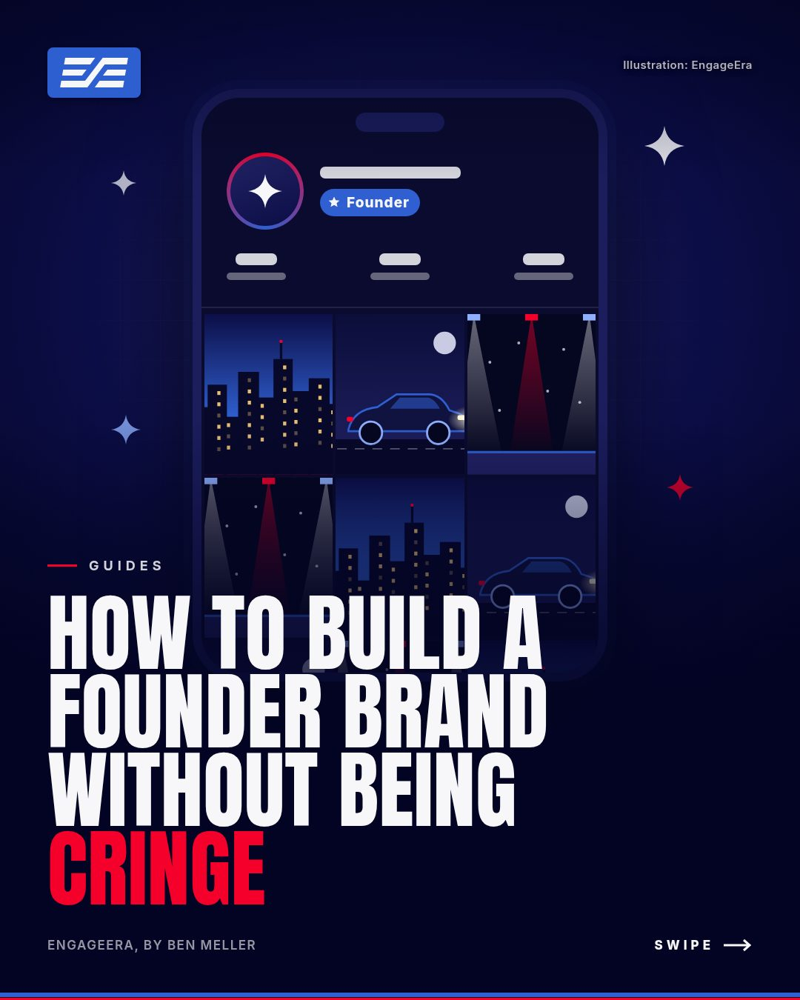

The short versionThe founder brands that work don't lecture. They show a clear world (a few settings you're in every week), use one consistent look, document real moments instead of performing, and quietly connect everything back to the company in the bio. Post less, better, and let people find the business themselves.
Most founders know they should have a personal brand. Most also cringe at the idea of posting "5 lessons I learned as a CEO" to a front-facing camera.
Good news: that's not what works anyway. The founders people actually follow aren't teaching. They're letting you into a world.
Step 1: Define your world
A personal brand isn't a topic. It's a place people want to be. Pick three settings you're genuinely in every week, and let them become the backdrop of everything you post.
- Where you work: the office, the workshop, the backstage, the kitchen
- How you move: the car, the gym, the run, the travel
- Where the action is: events, launches, dinners, the rooms you get invited into
Repeat those settings enough and people start to recognize your world at a glance. That recognition is the brand.
Step 2: Pick one look, and never break it
The founder accounts that feel "premium" almost always have a consistent visual style: one photo edit, one video edit, one way of putting text on screen. It's what makes an iPhone clip look intentional.
Build one preset for photos and one for video. Apply them to everything. Resist the urge to experiment every post.
Step 3: Document, don't perform
The fastest way to be cringe is to act like a creator. The fastest way to be interesting is to let people see what's actually happening.
- Film ten seconds of everything: events, meetings, trips, the build
- Show where you are, not what you think about it
- Keep captions short. A place, a time, a few words
- Let music carry video instead of a voiceover
Mystery is a feature. You don't need to explain every post.
Step 4: Show momentum
People follow founders who are clearly going somewhere. Make the story visible: the launch, the first hire, the new city, the bigger room. A simple recurring series ("Building [Company], Ep. 12") turns progress into something people check back for.
Step 5: Connect it back to the business, quietly
Your personal account shouldn't sell. It should make people curious.
- Put the company in your bio. That's the bridge.
- Show the build as part of your life, not as an ad.
- Let the company's own account handle the offers, the news and the details.
People follow the person first, then find the business. That order is what makes it feel authentic.
What to avoid
- Talking-head advice videos, unless teaching is genuinely your thing
- "Day in the life of a CEO" formats
- Captions that flex, motivate or explain
- Posting everything. Leave people wanting more.
Where to start this week
- Write down your three settings.
- Make one photo preset and one video preset.
- Film everything for seven days, no posting pressure.
- Pick your three best moments and post them in your new look.
That's a founder brand. Not a content calendar, a world.
FAQ
Do founders need to talk on camera to build a personal brand?
No. Many of the strongest founder accounts are mostly documentary: events, builds, travel and behind-the-scenes moments with little or no talking.
How often should a founder post?
Two or three strong feed posts a week, with stories for volume, is plenty. Consistency and quality matter more than daily posting.
How do you connect a personal brand to the business?
Put the company in your bio, show the build as part of your life, and let the company's own account do the selling. People follow the person first and find the business second.